Докладчик
- Агапова Анна Антоновна
- Российский университет дружбы народов им. П. Лумумбы
Цель работы
Научиться размещать сайт на GitHub pages. Выполнить первый этап
индивидуального проекта.
Задание
- Установить необходимое программное обеспечение.
- Скачать шаблон темы сайта.
- Разместить его на хостинге git.
- Установить параметр для URLs сайта.
- Разместить заготовку сайта на Github pages.
Выполнение этапа
индивидуального проекта
- Скачиваю последнюю версию исполняемого файла hugo.
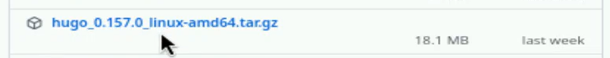
Скачивание файла
- Распаковываю архив с исполняемым файлом.
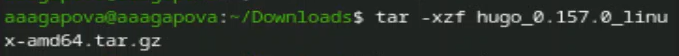
Распаковка архива
- Открываю репозиторий с шаблоном темы сайта.
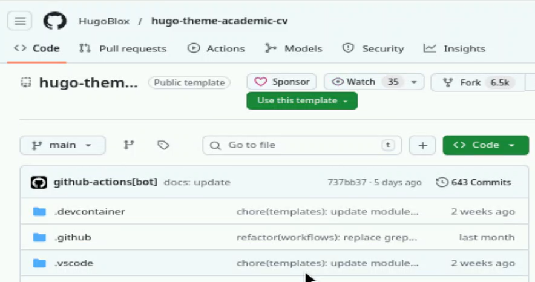
Тема сайта
- Создаю свой репозиторий blog на основе репозитория с шаблоном темы
сайта.
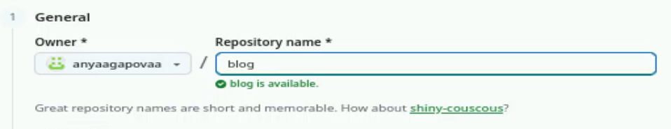
Создание репозитория
- Проверяю, что репозиторий создался.
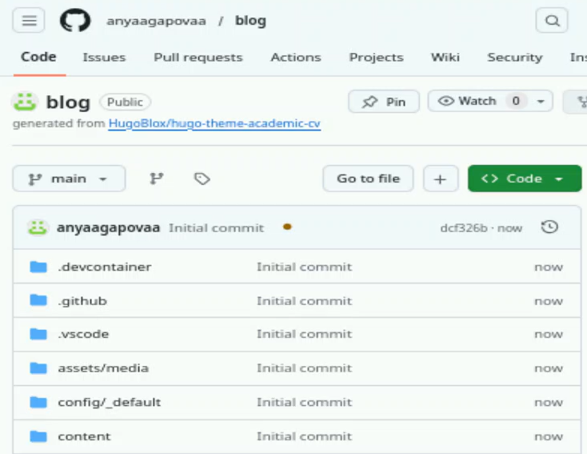
Проверка
- Клонирую свой репозиторий в локальный репозиторий.
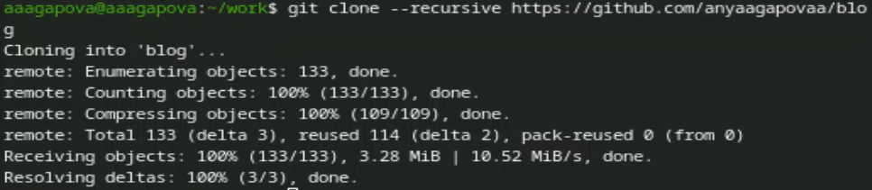
Клонирование репозитория
- Запускаю исполняемый файл.
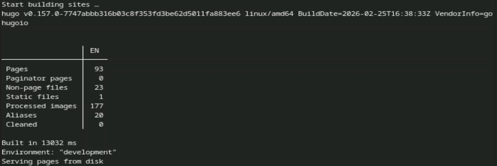
Запуск файла
- Создаю новый пустой репозиторий чье имя будет адресом сайта.
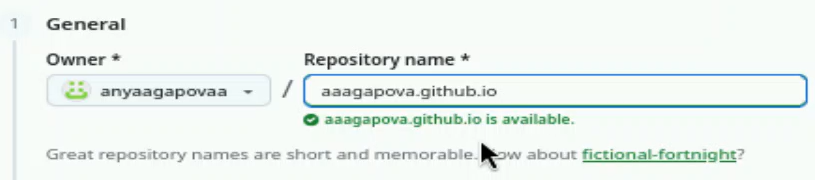
Создание репозитория
- Клонирую свой репозиторий в локальный репозиторий.
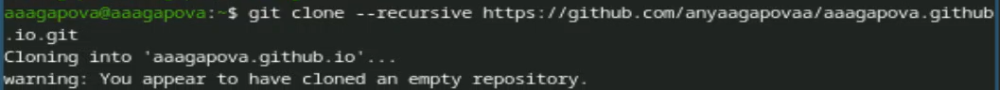
Клонирование репозитория
- Создаю главную ветку с именем main и создаю пустой файл
README.md.
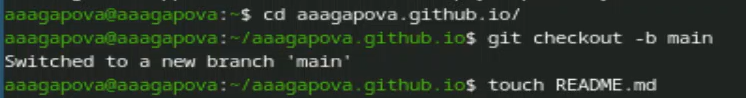
Создание ветки и файла
- В файле .gitignore закомментируем строчку public.
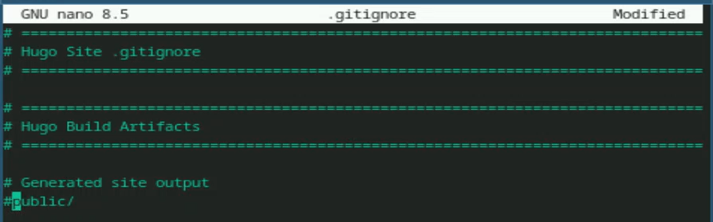
Закомментирование строчки
- Отправляю изменения на GitHub.
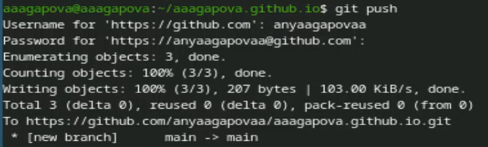
Отправление на GitHub
- Подключаю репозиторий к каталогу public.
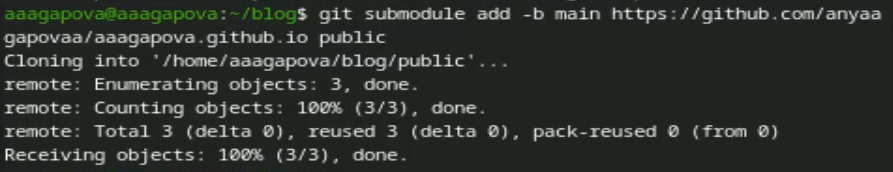
Подключение репозитория
- Выполняю команду исполняемого файла.
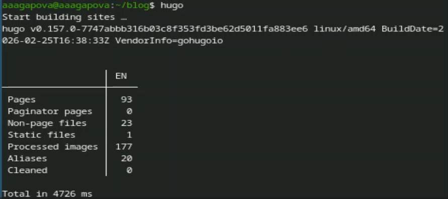
Выполнение команды
- Отправляю изменения на GitHub.
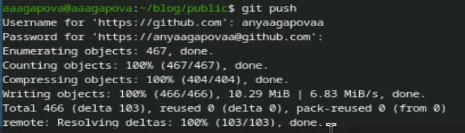
Отправление на GitHub
Выводы
Я научилась размещать сайт на GitHub pages и выполнила первый этап
индивидуального проекта.